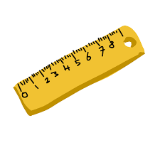

esse site foi feito para todos os amantes de dinosssauros do brasil, onde nos podemos nos reunir é descobrir mais sobre a esses "repteis"
que foram extintos milhares de anos atras.
Curiosidades:
O maior dinossauros do mundo 
Em terceiro lugar: brachiossauro
![]()
Brachiosaurus é um gênero de dinossauro saurópode que viveu na América do Norte durante
o Jurássico Superior, cerca de 154–150 milhões de anos atrás.[2] Foi descrito pela primeira
vez pelo paleontólogo americano Elmer S. Riggs em 1903 quando fósseis foram descobertos no vale do Rio Colorado.
É estimado que o Braquiossauro tivesse entre 18 e 21 metros de comprimento e pesasse em torno de 28,3 a 58 toneladas métricas.
fonte
Em segundo lugar: Futalognkosaurus

Futalognkosaurus dukei é uma espécie de dinossauro descoberta em 2007
e que recebeu esse nome por causa da empresa Duke Energy.
Media de 32 a 34 metros de comprimento, até 18 metros de altura
até 18 metros de altura
fonte
Em primeiro lugar: Australotitan

Australotitan representa o maior dinossauro descoberto até hoje na Austrália.[2] O gênero contém uma única espécie
Australotitan cooperensis (o titã do sul do Cooper), em homenagem a Cooper Creek na Bacia de Eromanga.
Teria cerca de 6,5 metros de altura no quadril e medido até 30 metros do focinho à ponta da cauda.
Provavelmente pesava entre 23 e 74 toneladas métricas.
fato engraçado: foi apelidado de"Bananabendersaurus" antes de sua descrição.
fonte
Acabou as Curiosidades